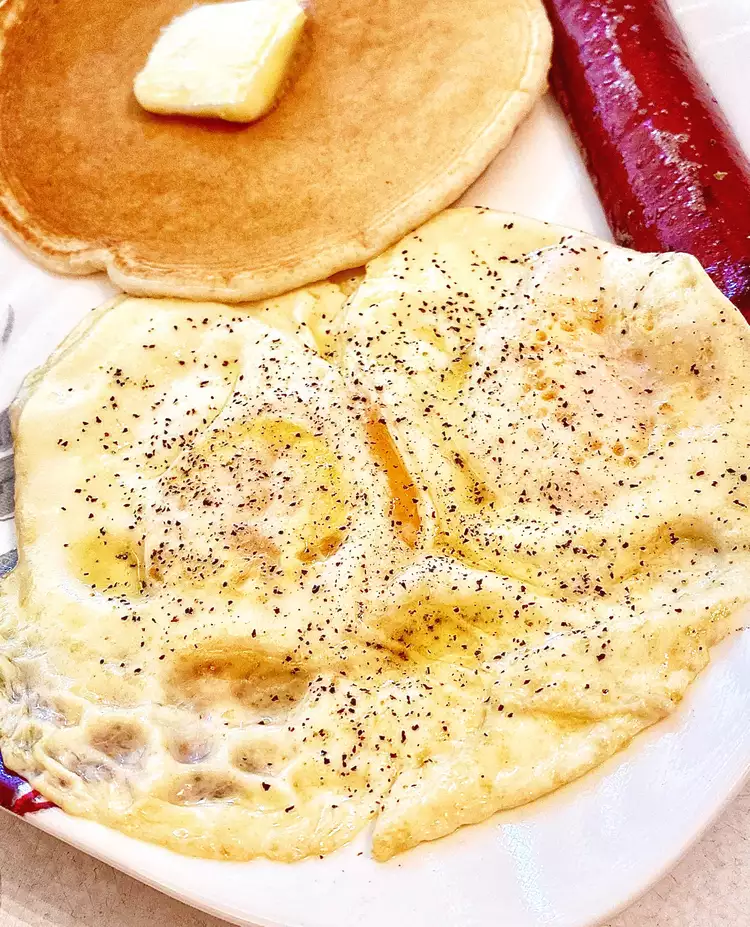

Over Easy Eggs

Description
Sometimes you just need a simple over easy egg.
Ingredients
- 1 tbsp butter
- 2 large eggs
- salt, to taste
- pepper, to taste
Directions
- Melt butter in an 8-inch nonstick pan over medium heat. Once butter is melted, crack eggs into the pan. Tilt pan to evenly distribute eggs. Cook until whites are no longer translucent, 1 to 2 minutes. Flip eggs by pushing the pan away from you and slightly tossing eggs up and over. Move pan upwards to catch eggs.
- Cook on second side until desired doneness, 30 to 45 seconds. Season with salt and pepper.